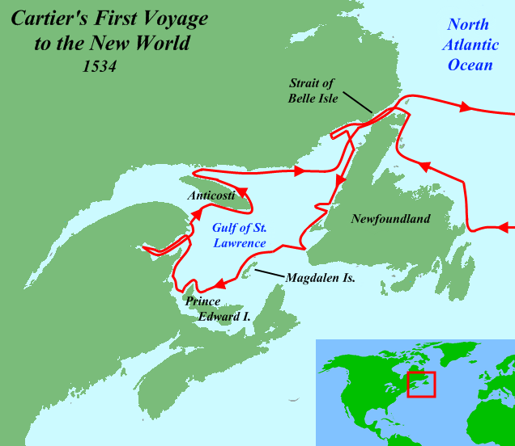
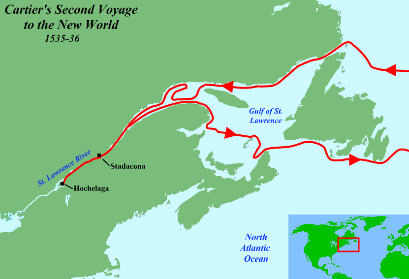
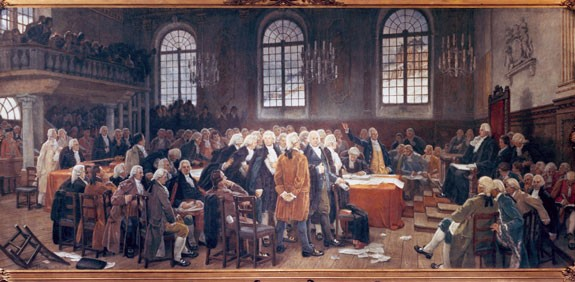

History
Aboriginal Peoples
When Europeans explored Canada they found all regions occupied by native peoples they called Indians, because the first explorers thought they had reached the East Indies. The native people lived off the land, some by hunting and gathering, others by raising crops. The Huron-Wendat of the Great Lakes region, like the Iroquois, were farmers and hunters. The Cree and Dene of the Northwest were hunter-gatherers. The Sioux were nomadic, following the bison (buffalo) herd. The Inuit lived off Arctic wildlife. West Coast natives preserved fish by drying and smoking. Warfare was common among Aboriginal groups as they competed for land, resources and prestige.
The arrival of European traders, missionaries, soldiers and colonists changed the native way of life forever. Large numbers of Aboriginals died of European diseases to which they lacked immunity. However, Aboriginals and Europeans formed strong economic, religious and military bonds in the first 200 years of coexistence which laid the foundations of Canada.
First Europeans
European exploration began in earnest in 1497 with the expedition of John Cabot, who was the first to draw a map of Canada’s East Coast.ohn Cabot, an Italian immigrant to England, was the first to map Canada’s Atlantic shore,setting foot on Newfoundland or Cape Breton Island in 1497 and claiming the New Founde Land for England. English settlement did not begin until 1610
Exploring a River, Naming Canada
Between 1534 and 1542, Jacques Cartier made three voyages across the Atlantic, claiming the land for King Francis I of France. Cartier heard two captured guides speak the Iroquoian word kanata, meaning “village.” By the 1550s, the name of Canada began appearing on maps.
Jacques Cartier
Jacques Cartier was a Breton explorer who claimed what is now Canada for France. Jacques Cartier was the first European to describe and map the Gulf of Saint Lawrence and the shores of the Saint Lawrence River, which he named "The Country of Canadas", after the Iroquois names for the two big settlements he saw at Stadacona (Quebec City) and at Hochelaga (Montreal Island).
First Voyage - 1534
On April 20, 1534,[11] Cartier set sail under a commission from the king, hoping to discover a western passage to the wealthy markets of Asia.In the words of the commission, he was to "discover certain islands and lands where it is said that a great quantity of gold and other precious things are to be found".
It took him twenty days to sail across the ocean. Starting on May 10 of that year, he explored parts of Newfoundland, areas that now comprise the Canadian Atlantic provinces and the Gulf of St. Lawrence. During one stop at Îles aux Oiseaux (Islands of the Birds, now the Rochers-aux-Oiseaux federal bird sanctuary, northeast of Brion Island in the Magdalen Islands), his crew slaughtered around 1000 birds, most of them great auks (extinct since 1852). Cartier's first two encounters with aboriginal peoples in Canada on the north side of Chaleur Bay, most likely the Mi'kmaq, were brief; some trading occurred.
His third encounter took place on the shores of Gaspé Bay with a party of St. Lawrence Iroquoians, where on July 24, he planted a cross to claim the land for France.[13] The 10-meter cross bearing the words "Long Live the King of France" took possession of the territory in the name of the king. The change in mood was a clear indication that the Iroquoians understood Cartier's actions. Here he kidnapped the two sons of their captain.[14] Cartier wrote that they later told him this region where they were captured (Gaspé) was called by them Honguedo. The natives' captain at last agreed that they could be taken, under the condition that they return with European goods to trade.
Cartier returned to France in September 1534, sure that he had reached an Asian land.
Second Voyage - 1535-1536
Jacques Cartier set sail for a second voyage on May 19 of the following year with three ships, 110 men, and his two Iroquoian captives. Reaching the St. Lawrence, he sailed up-river for the first time, and reached the Iroquoian capital of Stadacona, where Chief Donnacona ruled.
After spending two days among the people of Hochelaga, Cartier returned to Stadacona on October 11. It is not known exactly when he decided to spend the winter of 1535–1536 in Stadacona, and it was by then too late to return to France. Cartier and his men prepared for the winter by strengthening their fort, stacking firewood, and salting down game and fish. From mid-November 1535 to mid-April 1536, the French fleet lay frozen solid at the mouth of the St. Charles River, under the Rock of Quebec. Ice was over a fathom (1.8 m) thick on the river, with snow four feet (1.2 m) deep ashore. To add to the misery, scurvy broke out
Cartier states that by mid-February, "out of 110 that we were, not ten were well enough to help the others, a pitiful thing to see". The Frenchmen used up the bark of an entire tree in a week on the cure, and the dramatic results prompted Cartier to proclaim it a Godsend, and a miracle.
Ready to return to France in early May 1536, Cartier decided to kidnap Chief Donnacona and take him to France,[21] so that he might personally tell the tale of a country further north, called the "Kingdom of Saguenay", said to be full of gold, rubies and other treasures. After an arduous trip down the St. Lawrence and a three-week Atlantic crossing, Cartier and his men arrived in Saint-Malo on July 15, 1536, concluding the second, 14-month voyage, which was to be Cartier's most profitable.
Third vouyage - 1547 - 1542
On May 23, 1541, Cartier departed Saint-Malo on his third voyage with five ships. This time, any thought of finding a passage to the Orient was forgotten. The goals were now to find the "Kingdom of Saguenay" and its riches, and to establish a permanent settlement along the St. Lawrence River.Anchoring at Stadacona, Cartier again met the Iroquoians, but found their "show of joy" and their numbers worrisome, and decided not to build his settlement there. Sailing a few kilometres up-river to a spot he had previously observed, he decided to settle on the site of present-day Cap-Rouge, Quebec. The convicts and other colonists were landed, the cattle that had survived three months aboard ship were turned loose, earth was broken for a kitchen garden, and seeds of cabbage, turnip, and lettuce were planted. A fortified settlement was thus created and was named Charlesbourg-Royal. Another fort was also built on the cliff overlooking the settlement, for added protection.
The men also began collecting what they believed to be diamonds and gold, but which upon return to France were discovered to be merely quartz crystals and iron pyrites, respectively — which gave rise to a French expression: "faux comme les diamants du Canada" ("As false as Canadian diamonds").
Having set tasks for everyone, Cartier left with the longboats for a reconnaissance in search of "Saguenay" on September 7. Having reached Hochelaga, he was prevented by bad weather and the numerous rapids from continuing up to the Ottawa River.
Returning to Charlesbourg-Royal, Cartier found the situation ominous. The Iroquoians no longer made friendly visits or peddled fish and game, but prowled about in a sinister manner. No records exist about the winter of 1541–1542 and the information must be gleaned from the few details provided by returning sailors. It seems the natives attacked and killed about 35 settlers before the Frenchmen could retreat behind their fortifications. Even though scurvy was cured through the native remedy (Thuja occidentalis infusion), the impression left is of a general misery, and of Cartier's growing conviction that he had insufficient manpower either to protect his base or to go in search of the Saguenay Kingdom.
Cartier left for France in early June 1542, encountering Roberval and his ships along the Newfoundland coast, at about the time Roberval marooned Marguerite de La Rocque. Despite Roberval's insistence that he accompany him back to Saguenay, Cartier slipped off under the cover of darkness and continued on to France, still convinced his vessels contained a wealth of gold and diamonds. He arrived there in October, in what proved to be his last voyage. Meanwhile, Roberval took command at Charlesbourg-Royal, but it was abandoned in 1543 after disease, foul weather and hostile natives drove the would-be settlers to despair.
Royal New France
In 1604, the first European settlement north of Florida was established by French explorers Pierre de Monts and Samuel de Champlain, first on St. Croix Island (in present-day Maine), then at Port-Royal, in Acadia (present-day Nova Scotia). In 1608 Champlain built a fortress at what is now Québec City. The colonists struggled against a harsh climate. Champlain allied the colony with the Algonquin, Montagnais, and Huron, historic enemies of the Iroquois, a confederation of five (later six) First Nations who battled with the French settlements for a century. The French and the Iroquois made peace in 1701.
The French and Aboriginal people collaborated in the vast fur-trade economy, driven by the demand for beaver pelts in Europe. Outstanding leaders like Jean Talon, Bishop Laval, and Count Frontenac built a French Empire in North America that reached from Hudson Bay to the Gulf of Mexico.
Count Frontenac refused to surrender Quebec to the English in 1690, saying: “My only reply will be from the mouths of my cannons!” Pierre Le Moyne, Sieur d’Iberville, was a great hero of New France, winning many victories over the English, from James Bay in the north to Nevis in the Caribbean, in the late 17th and early 18th centuries. Sir Guy Carleton (Lord Dorchester), as Governor of Quebec, defended the rights of the Canadiens, defeated an American military invasion of Quebec in 1775, and supervised the Loyalist migration to Nova Scotia and Quebec in 1782-83.
Struggle for a continent
In 1670, King Charles II of England granted the Hudson’s Bay Company exclusive trading rights over the watershed draining into Hudson Bay. For the next 100 years the Company competed with Montreal-based traders. The skilled and courageous men who travelled by canoe were called voyageurs and coureurs des bois, and formed strong alliances with First Nations.
English colonies along the Atlantic seaboard, dating from the early 1600s, eventually became richer and more populous than New France. In the 1700s France and Great Britain battled for control of North America. In 1759, the British defeated the French in the Battle of the Plains of Abraham at Québec City — marking the end of France’s empire in America. The commanders of both armies, Brigadier James Wolfe and the Marquis de Montcalm, were killed leading their troops in battle.
Canada under British rule(1763-1931)
As part of the terms of the Treaty of Paris (1763), signed after the defeat of New France in the Seven Years' War, France renounced its claims to territory in mainland North America, except for fishing rights off Newfoundland and the two small islands of Saint Pierre and Miquelon where its fishermen could dry their fish.
The new British rulers of Canada abolished and later reinstated most of the property, religious, political, and social culture of the French-speaking habitants, guaranteeing the right of the Canadiens to practice the Catholic faith and to the use of French civil law (now Quebec Civil Code) through the Quebec Act of 1774. The Royal Proclamation of 1763 had been issued in October, by King George III following Great Britain's acquisition of French territory.The proclamation organized Great Britain's new North American empire and stabilized relations between the British Crown and Aboriginal peoples through regulation of trade, settlement, and land purchases on the western frontier.[100]
The beginings of Democray
Democratic institutions developed gradually and peacefully. The first representative assembly was elected in Halifax, Nova Scotia, in 1758. Prince Edward Island followed in 1773, New Brunswick in 1785. The Constitutional Act of 1791 divided the Province of Quebec into Upper Canada (later Ontario), which was mainly Loyalist, Protestant and English-speaking, and Lower Canada (later Quebec), heavily Catholic and French-speaking.

The Act also granted to the Canadas, for the first time, legislative assemblies elected by the people. The name Canada also became official at this time and has been used ever since. The Atlantic colonies and the two Canadas were known collectively as British North America. The first elected Assembly of Lower Canada, in Québec City, debates whether to use both French and English, January 21, 1793
Dominion
Sir Leonard Tilley, an elected official and Father of Confederation from New Brunswick, suggested the term Dominion of Canada in 1864. He was inspired by Psalm 72 in the Bible which refers to “dominion from sea to sea and from the river to the ends of the earth.” This phrase embodied the vision of building a powerful, united, wealthy and free country that spanned a continent. The title was written into the Constitution, was used officially for about 100 years, and remains part of our heritage today.
- Expansion of the dominion:
- 1867- Ontario, Quebec, Nova Scotia, New Brunswick
- 1870- Manitoba, Northwest Territories(N.W.T.)
- 1871- British Columbia
- 1873- Prince Edward Island
- 1880- Transfer of the Arctic Islands (to N.W.T.)
- 1898- Yukon Territory
- 1905- Alberta, Saskatchewan
- 1949- Newfoundland and Labrador
- 1999- Nunavut